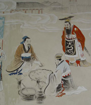

百家讲坛全集
>
百家讲坛2009
>
百家讲坛 班墨传奇

名称：
集数：
播出时间：
百家讲坛 班墨传奇
3
2009年11月06日
墨子，一位和孔子同样久负盛名的思想家；鲁班，一位家喻户晓的发明家。墨子曾经创立了一整套守城的工具和方法。墨守成规，正是当时的人们，对于墨子守城有术的称赞；鲁班，有着许多的发明创造，被誉为土木工匠的祖师爷，班门弄斧，正是民间百姓，对于鲁班高超技能的赞许。俗话说不是冤家不聚头，墨子与鲁班，他们是老乡，他们是对手，他们更是朋友。但是在春秋战国时期，这一对冤家朋友，却被卷入了一场残酷的战争之中。那么，这是一场怎样的战争？墨子与鲁班，在这场战争中又会上演怎样的传奇故事？
分集介绍
《百家讲坛》 班墨传奇 （一） 冤家朋友
播出时间：
主讲人：
介绍：
2009年11月06日
钱文忠
墨子，一个和孔子同样久负盛名的思想家。鲁班，一位家喻户晓的发明家。俗话说不是冤家不聚头，墨子与鲁班他们是老乡，他们是对手，他们更是朋友。但是在春秋战国时期，这一对冤家朋友却被卷入了一场残酷的战争之中。本期节目由复旦大学教授钱文忠讲述墨子与鲁班在这场战争中的传奇故事。
《百家讲坛》 班墨传奇 （二） 认识墨子
播出时间：
主讲人：
介绍：
2009年11月07日
钱文忠
战国时期，楚国为了攻打宋国请鲁班为其设计先进的攻城武器。由于鲁班的协助，楚国已经胜券在握。就在这时却有一个人出来阻止这场战争，这个人就是墨子。墨子不仅是鲁班的老乡、好朋友，还是鲁班多年的老对手。本期节目介绍了墨子制止战争的方法，以及这样做的目的。
《百家讲坛》 班墨传奇 （三） 攻守之间
播出时间：
主讲人：
介绍：
2009年11月08日
钱文忠
墨子为了阻止楚国攻打宋国，千里迢迢赶到楚国。虽然他顺利说服了鲁班,，但是楚惠王依然要发动战争，于是为了说服楚惠王，墨子跟鲁班即将开始一场惊心动魄的军事演习。然而墨子擅守，鲁班擅攻，这场军事演习最终谁会胜出？本期节目由复旦大学教授钱文忠讲述墨子与鲁班之间的传奇故事。